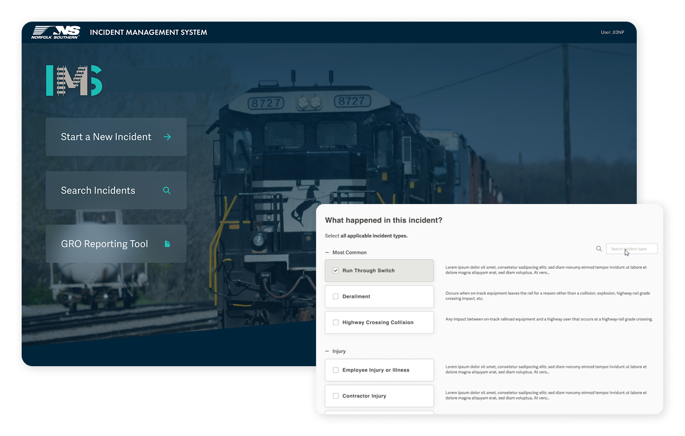
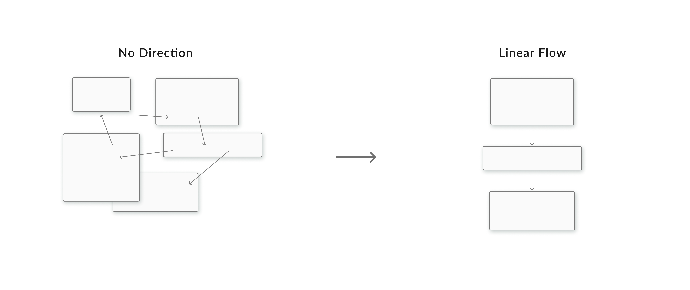
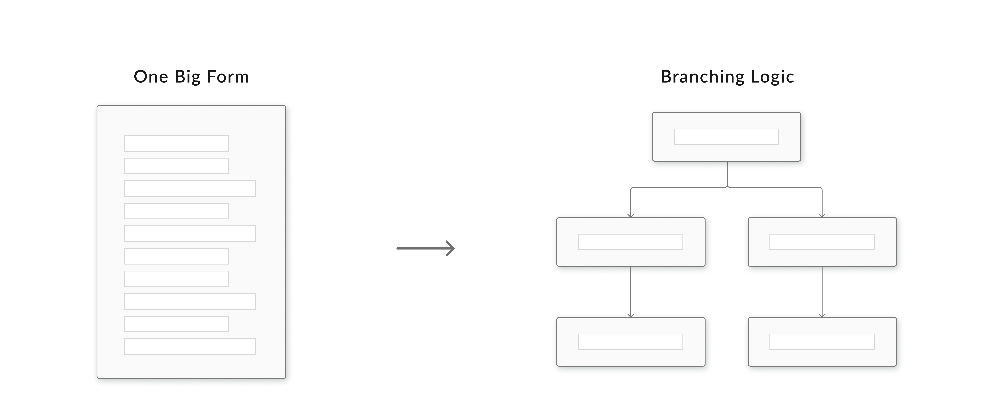

Improving data validity of incident reporting for railroad workers.
- Timeline
- Spring 2023, 15 weeks
- Role
- UX Designer
- Team
- Product owner, 5 Angular developers
- Skills
- User research, product design, design systems, Adobe XD

01Overview
Designing a guided interface that streamlines the reporting process and ensures accurate collection of key information.
My internship team redesigned the Incident Management System (IMS), an internal application for reporting safety incidents. A key goal of the redesign was to better comply with government regulations on what information must be reported to the Federal Railroad Administration (FRA).
Task success in usability testing
+150%
FRA requirements all and only what's required
100%
Form fields for some incident types
up to −50
before after
70%
less time to file an incident report
02Project scope
As the sole designer, I identified usability & data validity issues with the current system, mapped the reporting workflow to the users' needs, and created high-fidelity prototypes to test and iterate on.
I worked closely with business and engineering stakeholders to understand the problems with the system's results, and establish metrics to track improvement. I also interviewed end users to better understand the usability issues contributing to the data's shortcomings, and tested + validated designs in a workshop with 21 users and stakeholders.
03Key redesign features
While the details of this design are under NDA, I can share some of the research insights I made and the design principles they led me to.
<2×
a year: that's how often most users report an incident, so the system has to work for someone who's never seen it.
A step-by-step flow

The original interface, with layers of nested tabs and no specific order, was frustrating and opaque to infrequent users. So, we redesigned the process into a step-by-step, instructed linear flow, a change that greatly reduced software bugs and helped users complete the report without any missing information.
Speaking the user's language
The original system was written by government reporting experts in the dense regulatory language of the FRA, and grouped information by the pages of the old paper form reports. I reworked the information architecture based on user feedback like card sorting exercises, and rewrote legislative terminology into questions our users could easily understand.
Only the questions that apply

To minimize the cognitive load on the user, I proposed progressive disclosure to reduce the amount of information asked on each screen and overall. With branching internal logic, we removed unnecessary fields when reporting different incidents (as many as 50 fewer fields for some scenarios!)
04Learnings ✨
Working on this product was an exciting challenge! Contact me for more details.
- 40+ people in my daily stand-up
- 20+ senior stakeholders I presented to
- 21 users & stakeholders in my UXR workshop
Adaptability
A week after I was placed on the project, a major derailment placed Norfolk Southern in the national spotlight, and proved the need for huge changes across the Safety & Environmental department. Under increased scrutiny, shifting priorities, and a company reorganization, I learned to manage high pressure in a cross-functional team, and balance the needs of many different stakeholders.
User advocacy
As the only designer working on the product, I had to articulate the value of user-centered design to my cross-functional team, and fight for the opportunity to interface directly with users. When users were inaccessible, I also learned to leverage alternative methods such as cognitive walkthroughs, heuristic analyses, and analyzing live data to gather insights.
Confidence!
Being the only woman, intern, and designer in a daily stand-up of 40+ people pushed me way out of my comfort zone. I accomplished things I couldn't imagine just a few months ago, like shaping the new product's functionality, leading a UXR workshop, and presenting my work to a group of more than 20 high-up stakeholders!